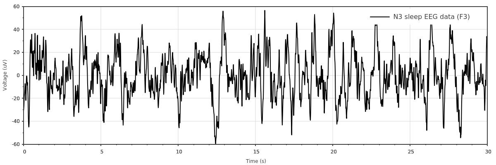
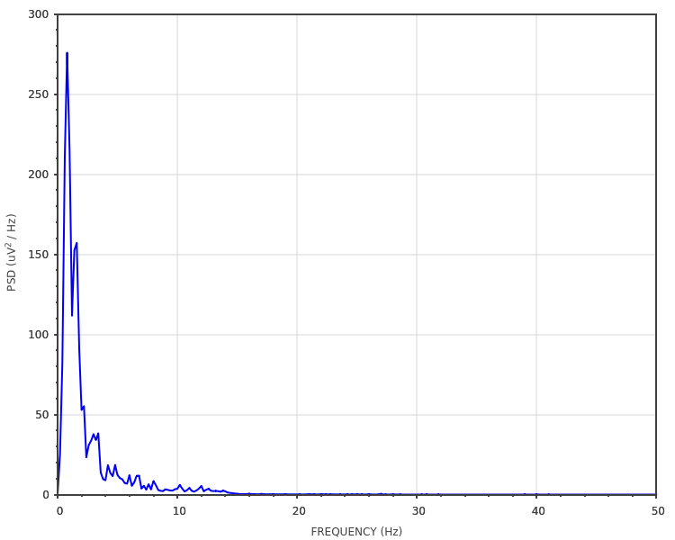

This example is inspired from https://raphaelvallat.com/bandpower.html.
Here, we load EEG data, plot them and then compute its periodogram:
#include <scicpp/core.hpp>
#include <scicpp/plots.hpp>
namespace sci = scicpp;
namespace plt = sci::plots;
namespace sig = sci::signal;
int main() {
using namespace sci::operators;
using namespace sci::units::literals;
// ---- Loading data (The signal is in microvolts)
const auto eeg_signal = sci::TxtLoader<sci::units::microvolt<>>()
.skiprows(1)
.load_vector("examples/eeg-data.txt");
// Sampling frequency and time vector
constexpr auto fs = 100_Hz;
const auto time = sci::arange(0.0, double(eeg_signal.size())) / fs;
auto plot1 = plt::plot(time, eeg_signal);
plot1.color("black");
plot1.ylabel("Voltage (uV)");
plot1.xlabel("Time (s)");
plot1.fontSize(12);
plot1.label("N3 sleep EEG data (F3)");
plot1.show(1200, 400);
// ---- Welch's periodogram
// Configure the spectrum analyzer
auto spec = sig::Spectrum{}
.fs(fs)
.window(sig::windows::Boxcar, time.size() / 6);
auto plot2 = plt::psd<sig::DENSITY, plt::LINEAR>(spec, eeg_signal);
plot2.size(1000, 500);
plot2.xlabel("FREQUENCY (Hz)");
plot2.ylabel("PSD (uV^2 / Hz)");
plot2.show();
}
The resulting plot of the signal:
The power spectral density in linear scale:
{kind=link}
{kind=link}